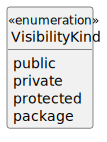
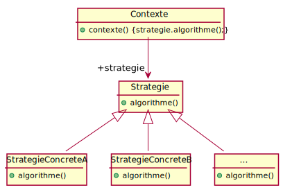
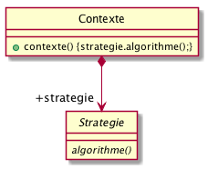
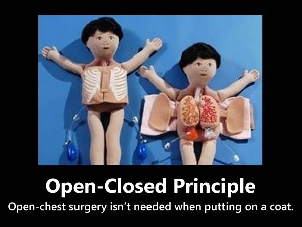
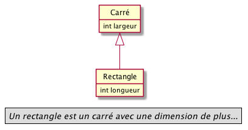
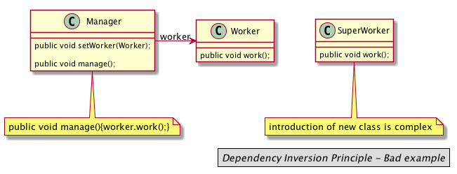

CPOA : les premiers patrons
Jean-Michel Brueljbruel@gmail.com
version 2.0, 2022-01-11
Suivre ces slides …
http://bit.ly/jmb-cpoa http://iut-blagnac.github.io/cpoa/
Plan
- Introduction
- Rappels Java
- Base des patrons
What’s wrong (non Java example)?

What’s wrong (Java example) ?
public class Phone {
private final String unformattedNumber;
public Phone(String unformattedNumber) {
this.unformattedNumber = unformattedNumber;
}
public String getAreaCode() {
return unformattedNumber.substring(0,3);
}
public String getPrefix() {
return unformattedNumber.substring(3,6);
}
public String getNumber() {
return unformattedNumber.substring(6,10);
}
}
public class Customer {
public String getMobilePhoneNumber() {
Phone m_Phone = new Phone("111-123-2345");
return "(" + m_Phone.getAreaCode() + ") "
+ m_Phone.getPrefix() + "-"
+ m_Phone.getNumber();
}
}What’s wrong (solution) ?
public class Phone {
private final String unformattedNumber;
public Phone(String unformattedNumber) {
this.unformattedNumber = unformattedNumber;
}
public String getAreaCode() {
return unformattedNumber.substring(0,3);
}
public String getPrefix() {
return unformattedNumber.substring(3,6);
}
public String getNumber() {
return unformattedNumber.substring(6,10);
}
public String toString() {
return "(" + this.getAreaCode() + ") "
+ this.getPrefix() + "-"
+ this.getNumber();
}
}
public class Customer {
public String getMobilePhoneNumber() {
Phone m_Phone = new Phone("111-123-2345");
return m_Phone;
}
}Introduction
Ce cours porte sur la Conception et Programmation Objet Avancée.
Concepts objets
Vous avez appris (cf. M2103 et M2104) un certain nombre de concepts objets :
- Abstraction
- Encapsulation
- Héritage
- Polymorphisme
Abstraction
Définition :
Abstraction
Définition (restrictive) :
Une classe est une abstraction des caractéristiques communes d’un ensemble d’objets.
Encapsulation
Définition :
Encapsulation
Définition (restrictive) :
Dans la description d’un objet, le but de l'encapsulation est de masquer les attributs et les méthodes, c’est-à-dire, la manière dont est réalisé le comportement de l’objet.
Héritage
Définition :
Héritage
Définition (simpliste) :
L’héritage est la transmission de caractéristiques à ses descendants.
La classe qui hérite dispose des méthodes et attributs de niveau public et
protected de sa classe mère.
Polymorphisme
Le nom de polymorphisme vient du grec :
Polymorphisme
Le nom de polymorphisme vient du grec :
qui peut prendre plusieurs formes
|
L’héritage concerne les classes, le polymorphisme concerne les objets. |
Polymorphisme (suite)
On distingue généralement trois types de polymorphisme :
- Le polymorphisme ad hoc (également surcharge ou en anglais overloading)
- Le polymorphisme paramétrique (également généricité ou en anglais template)
- Le polymorphisme d’héritage (également redéfinition, spécialisation ou en anglais overriding)
Polymorphisme ad hoc
- Appelé aussi surcharge.
- Permet d’avoir des fonctions de même nom dans des classes sans aucun rapport entre elles.
- Permet de définir des opérateurs d’utilisation différente en fonction des paramètres.
int method(int,int);
int method(int);
int method(float,float);Le polymorphisme paramétrique
Appelé aussi généricité.
interface Iterator<E> {
boolean hasNext();
E next();
}
public <T> static void copy(Collection<? extends T> source, Collection<? super T> dest) {
for (T t : source) {
dest.add(t);
}
}Le polymorphisme d’héritage
- Appelé aussi spécialisation (ou redéfinition).
- Lié à la redéfinition des méthodes héritées.
Objectifs de la conception objet
On essaye d’éviter trois problèmes principaux du développement :
- La rigidité
-
Anticiper les évolutions susceptibles d’impacter l’application.
- La fragilité
-
Eviter les erreurs provoquées par la modification d’une partie du code.
- L’immobilité
-
Rendre moins difficile l’extraction d’une partie du code.
Bonnes pratiques et patrons
Pour répondre aux problèmes ci-dessus, on va s’attaquer à diminuer les dépendances et éviter l'"effet spaghetti".
Les qualités recherchées sont :
- Robustesse : les changements n’introduisent pas de régressions.
- Extensibilité : il est facile d’ajouter de nouvelles fonctionnalités.
- Réutilisabilité : il est possible de réutiliser certaines parties de code pour construire d’autres applications.
Bonnes pratiques et patrons (suite)
Nous allons apprendre des bonnes pratiques :
- Identifier les aspects qui varient et les séparer des aspects constants
- Programmer une interface, non une implémentation
- Préférer la composition à l’héritage
- Les classes doivent être ouvertes à l’extension, mais fermées à la modification
- Dépendez d’abstractions. Ne dépendez pas de classes concrètes (inversion des dépendances)
- Ne parlez pas aux inconnus
Bonnes pratiques et patrons (suite)
L’étape suivante consiste à apprendre les bonnes solutions de conception, ce qu’on appelle les patrons de conception (ou design patterns en anglais).
Organisation du cours
|
Rappel du rythme : 1 cours, 1 TD et 2 TPs par semaine. Pendant 8 semaines. |
- La première semaine est consacrée aux principes généraux des patrons de conception, en partant d’un exemple (cours en fin de semaine).
Les 5 ou 6 suivantes sont consacrées à l’étude de certains patrons classiques. Mise en pratique sur des exercices en TP.
Le cours est inversé par rapport aux habitudes : Conception et étude d’un ou plusieurs patrons semaine
N; mise en oeuvre en TP semaineN+1; puis cours en amphi (détails, discussions) en semaineN+2.- Les 2 ou 3 dernières semaines, les étudiants sont en mode projet pour faire du refactoring d’applications réelles (conception aidée en TD sur les modèles UML™, mise en oeuvre en TP).
Organisation (suite)
Voici une proposition de déroulement des semaines :
- Semaine 1
-
SuperCanard, le grand classique, [strategy]
- Semaine 2
- Semaine 3
-
Patrons [Fabrique], [Proxy], [Etat]
- Semaine 4
-
- version intuitive (2 interfaces)
- version Java (classe
Observable)
- Semaine 5
-
L’exemple de Meyer : menus en objet
- Semaine 6
-
- Patrons Décorateur, Façade, Visiteur
- MVC avec l’exemple
JTablede Java - Patrons Chaîne de responsabilité (juste en cours)
- Semaines 7 et 8
-
Quelques idées de projet final :
- Refactorer un code généré par Umple.
- Refactorer le code de MPA (mais pas le leur, celui d’un autre groupe)
Evaluation et notation
Comme prévu par le planning des contrôles, les étudiants auront :
- une note de projet (TPs + projet final) ⇒ coef. 1
- une note d’examen final (semaine 5) ⇒ coef. 2
Rappels sur des éléments Java importants
Importance du typage
Différents types de typage
Le fait d’attribuer un type (une classe) à une variable (un objet) peut se faire de plusieurs façons :
- statique
- dynamique
- duck typing
Typage statique
On parle de typage statique quand la majorité des vérifications de type sont effectuées au moment de la compilation.
Exemple de typage statique
int i = 0; // cette déclaration indique explicitement que
// la variable i est de type entierTypage dynamique
Le typage dynamique consiste à laisser l’ordinateur réaliser l’opération de typage à la volée, lors de l’exécution du code.
Typage dynamique (exemple)
Exemple de typage dynamique
/**
* @author André Peninou
*/
public class Type {
void m() {
System.out.println ("Type");
}
}
public class SousType extends Type {
void m() {
System.out.println ("SousType");
}
void autreM(){
System.out.println ("Spécifique SousType");
}
}
...
Type a = new Type();
a.m(); // "Type"
a = new SousType();
a.m(); // "SousType"
// Statique : a est un Type (à la compil)
// Dynamique : a est un SousType au runtime.
// D'où :
a = new SousType();
a.autreM();
// NOK car type statique == A => autreM() n'existe pas à la compilation
...Duck typing
Style de typage dynamique où la sémantique d’un objet (c’est-à-dire son type) est déterminée par l’ensemble de ses méthodes et de ses attributs, et non par un type défini et nommé explicitement par le programmeur.
|
L’origine de cette expression est liée à cette citation :
|
Duck typing (exemple)
Exemple de duck typing en Ruby
def calcule(a, b, c)
return a*b+c
end
$a = calcule(6, 3, 2)
$b = calcule('6', 3, ', the number of the beast')
puts $a.to_s
puts $b.to_sCe qui donne :
20 666, the number of the beast
| Pour aller plus loin : http://fr.wikipedia.org/wiki/Duck_typing |
Importance de la visibilité
Dès que l’on commence à avoir une application conséquente, l’organisation en package devient obligatoire. Revenons donc sur les questions de visibilité des propriétés et méthodes, qui seront importants dans la plupart des aspects de ce module.
Si un champ d’une classe A :
- est private, il est accessible uniquement depuis sa propre classe ;
- a la visibilité package (visibilité par défaut, pas de mot-clef), il est accessible de partout dans
le paquetage de
Amais de nulle part ailleurs ; - est protected, il est accessible de partout dans le paquetage de
Aet, siAest publique, grosso modo dans les classes héritant deAdans d’autres paquetages ; - est public, il est accessible de partout dans le paquetage de
Aet, siAest publique, de partout ailleurs.
| Ci-dessus, les niveaux de visibilité sont rangés par visibilité croissante. |
Importance de la visibilité (exemple)
package UN;
public class A {
protected String attrprotected;
String attrfriend; // friend
}Si on définit une deuxième classe dans le même package :
package UN;
class B {
...
{
A a = new A ();
a.attrprotected// OK : même si bizarre
a.attrfriend // OK : visible package
}
}
package UN;
class C extends A {
...
{
this.attrprotected// OK : normal
this.attrfriend // OK : visible package
}
}Importance de la visibilité (suite de l’exemple)
package DEUX;
class B {
...
{
A a = new A ();
a.attrprotected// NON OK : normal
a.attrfriend // NON OK : normal, proche de "private"
}
}
class C extends A {
...
{
this.attrprotected// OK : normal car protected et héritage
this.attrfriend // NON OK : normal, proche de "private"
}
}Alors private ou protected ?
À la question private ou protected ? Quel est le mieux pour les attributs ?
Visibilité et UML
| Il n’y a pas de visibilité par défaut en UML™. |
Retour sur les Membres static
class VariableDemo
{
static int count=0;
public void increment()
{
count++;
}
public static void main(String args[])
{
VariableDemo obj1=new VariableDemo();
VariableDemo obj2=new VariableDemo();
obj1.increment();
obj2.increment();
System.out.println("Obj1: count is="+obj1.count);
System.out.println("Obj2: count is="+obj2.count);
}
}Output:
Obj1: count is=2 Obj2: count is=2
Membres static (suite)
Comment ça marche :
- Les variables
staticsont initialisées au chargement de la classe. - Les variables
staticd’une classe sont initialisées avant que la moindre instance ne soit créée. - Les variables
staticsont initialisées avant que la moindre méthodestaticne s’exécute.
Méthodes static
import java.lang.Math;
class Another {
public static void main(String[] args) {
int result;
result = Math.min(10, 20); //calling static method min by writing class name
System.out.println(result);
System.out.println(Math.max(100, 200));
}
}Méthodes static et appel aux méthodes non-statiques
public class Main {
public static void main(String[] args) {
Main p = new Main();
k();
}
protected Main() {
System.out.print("1234");
}
protected void k() {
}
}À l’exécution :
Main p = new Main(); // => prints 1234
k() // => raises errorMéthodes static et appel aux méthodes non-statiques (suite)
Static method cannot call non-static methods
Bien sûr que si, sauf qu’il faut que cette dernière porte sur une instance de la classe.
Méthodes static et appel aux méthodes non-statiques (suite)
Constructors are kind of a method with no return type.
En fait il vaudrait mieux les considérer comme une sorte de méthode statique. En effet elle ne requièrent pas de porter sur un objet!
Utilité générale des enum
Modélisation
Le type enumération est souvent utilisé en modélisation :

Propriétés
public enum Civilite {
MADAME, MONSIEUR
}- Chaque élément d’une énumération est un objet à part entière
- Les objets
enumhéritent dejava.lang.Enum - On peut compléter les comportements des objets en ajoutant des méthodes
Méthodes de base
toString()System.out.println(Civilite.MADAME); //MADAMEvalueOf()Civilite civilite = Civilite.valueOf("MONSIEUR") ;values()Civilite[] civilites = Civilite.values() ;ordinal()Civilite civilite = Civilite.MONSIEUR ; System.out.println("Civilite : " + civilite + " [" + civilite.ordinal() + "]") ; // Civilite : MONSIEUR [1]Le 1er numéro d’ordre est 0. compareTo()System.out.println(Civilite.MADAME.compareTo(Civilite.MONSIEUR)) ; // -1
Exemple plus complexe
public enum Langage {
//Objets directement construits
JAVA("Langage JAVA", "Eclipse"),
C ("Lanage C", "Code Block"),
CPlus ("Langage C++", "Visual studio"),
PHP ("Langage PHP", "PS Pad");
private String name = "";
private String editor = "";
//Constructeur
Langage(String name, String editor){
this.name = name;
this.editor = editor;
}
public void getEditor(){
System.out.println("Editeur : " + editor);
}
public String toString(){
return name;
}
public static void main(String args[]){
Langage l1 = Langage.JAVA;
Langage l2 = Langage.PHP;
l1.getEditor();
l2.getEditor();
}
}Questions?
Retour TP1
Moulinette (Ruby) de note automatique
MODEL_NAME = "TP1.uml"
$assertFileContains = [
/@startuml/m,
/@enduml/m,
/abstract Personnage/m,
/Personnage\s+--> ".*" ComportementArme/m,
/interface\s+ComportementArme/m,
/ComportementArme\s+<\|\.\./m,
]
Dir.foreach("...") do |file_name|
...| Moyenne: 6,4/20 !! (7,9 en 2018) |
Retour TP1 (suite)
| Attendus |
90 |
| Rendus |
40 (44%) ⇒ 50 |
| Nom OK |
16 (plus que 26%) ⇒ 16 Exemple de noms : |
| 20/20 |
12 |
| 17/20 |
8 |
| 14/20 |
2 |
| 11/20 |
1 |
| 08/20 |
1 |
| Moy. |
17,7/20 |
Introduction : importance des patrons

Science is what we understand well enough to explain to a computer. Art is everything else we do.
Donald Knuth
Strategy
Principes de conception
|
Principe de conception
|
Principes de conception (suite)
|
Principe de conception
|
Principes de conception (suite)
|
Principe de conception
|
Définition du patron
|
Design pattern : Stratégie (Strategy)
Stratégie définit une famille d’algorithmes, encapsule chacun d’eux et les rend interchangeables. Il permet à l’algorithme de varier indépendamment des clients qui l’utilisent.

|
Premier exemple d’utilisation


|
Question
Pourquoi n’a-t’on pas utilisé Strategy pour afficher() ou nager()?
|
Autre exemple concret
| L’exemple qui suit est tiré de ce cours. |
Le problème
Vous avez une classe FileWriter qui a pour rôle d’écrire dans un fichier
ainsi qu’une classe DBWriter. Dans un premier temps, ces classes ne
contiennent qu’une méthode write() qui n’écrira que le texte passé
en paramètre.
Au fil du temps, vous vous rendez compte que c’est dommage qu’elles ne fassent que ça et vous aimeriez bien qu’elles puissent écrire en différents formats (HTML, XML, etc.) : les classes doivent donc formater puis écrire.
Autre exemple concret (suite)
La solution

Autre exemple concret (suite)
|
L’interface en
PHP (code source ici) |
Autre exemple concret (suite)
|
La classe abstraite
Writer (code source ici) |
Autre exemple concret (suite)
|
La classe
FileWriter (code source ici) |
Autre exemple concret (suite)
|
La classe
DBWriter (code source ici) |
Autre exemple concret (suite)
Enfin, nous avons nos trois formateurs.
L’un ne fait rien de particulier (TextFormater),
et les deux autres formatent le texte en deux langages
différents (HTMLFormater et XMLFormater).
Autre exemple concret (suite)
|
La classe
TextFormater (code source ici) |
Autre exemple concret (suite)
|
La classe
HTMLFormater (code source ici) |
Autre exemple concret (suite)
|
La classe
XMLFormater (code source ici) |
D’autres exemples
La fonction standard
sort()de python>>> sorted("This is a test string from Andrew".split(), key=str.lower) ['a', 'Andrew', 'from', 'is', 'string', 'test', 'This']Stratégie de cryptage en fonction de la taille d’un fichier
File file = getFile(); Cipher c = CipherFactory.getCipher( file.size() ); c.performAction(); // implementations: interface Cipher { public void performAction(); } class InMemoryCipherStrategy implements Cipher { public void performAction() { // load in byte[] .... } } class SwaptToDiskCipher implements Cipher { public void performAction() { // swapt partial results to file. } }
| Plus de détails ici |
(non) Réutilisation
| Les patrons ne sont pas réutilisables! |
Il faut implémeter la solution qu’il représente à chaque fois.
Réutilisation (exception)
Exception : certains font l’objet d’une librairie (comme Observer de Java).
Par exemple le patron Singleton existe dans la bibliothèque standard du langage en Ruby. C’est un mixin qu’il suffit d’inclure dans la classe qui doit être un singleton.
class Klass
include Singleton
# ...
end
a,b = Klass.instance, Klass.instance
a == b
# => true
Klass.new
# => NoMethodError - new is private ...Association ou composition
On trouve deux modèles UML™ :


Association ou composition (suite)
Et donc deux implémentations :
Composition ⇒ le composé encapsule les composants
public class Colvert extends Canard {
protected Colvert() {
this(new VolerAvecDesAiles(), new Cancan());
}
...
c1 = new Colvert();Association ⇒ le composant existe "en dehors"
...
vol = new VolerAvecDesAiles();
cri = new Cancan();
c1 = new Colvert(vol,cri);
...Un peu d’histoire
- 1977
-
Alexander : patterns pour les architectures (les vraies)
- 1987
-
Beck et Cunningham : patterns pour des interfaces utilisateurs
- 1988
-
Meyer : livre sur l’orienté objet (langage Eiffel), devenu la bible pour beaucoup de programmeurs (cf. [Meyer88])
- 1990-1995
-
Gamma, Helm, Johnson et Vlissides : LE livre de référence (cf. [GoF])
Les auteurs de ce livre sont connus comme les Gof pour « Gang of Four ». - 2003
-
Martin : principes SOLID (cf. [Martin03])
- 2004
-
Craig Larman décrit des modèles de conception : les Patterns GRASP (cf. [Larman05])
Exemples de bons principes
SOLID:
- Single Responsibility Principle
- Open-Closed Principle
- Liskov Substitution Principle
- Interface Segregation Principle
- Dependency Inversion Principle
Single Responsibility Principle

Responsabilité => Sujet à changement
Open-Closed Principle

Ouvert à l'extension mais fermé à la modification
Open-Closed Principle (suite)
Ainsi, une fois écrite et testée, une classe ne devrait être modifiée que pour être corrigée! Toute modification devrait être possible par extension.
Liskov Substitution Principle
Barbara Liskov est toujours active!

LSP : le principe

Une classe doit pouvoir être remplacée par une instance d'un de ses sous-types, sans modifier la cohérence du programme
LSP : un exemple
Un carré est un rectangle particulier.

|
Question
Peut-on toujours substituer un Carré à la place d’un Rectangle ?
|
Vraiment?
Réponse (
Rectangle.java)class Rectangle
{
protected int m_width;
protected int m_height;
public void setWidth(int width){
m_width = width;
}
public void setHeight(int height){
m_height = height;
}
public int getWidth(){
return m_width;
}
public int getHeight(){
return m_height;
}
public int getArea(){
return m_width * m_height;
}
}Vraiment?
Réponse (
Square.java)// Violation of Likov's Substitution Principle
class Square extends Rectangle
{
public void setWidth(int width){
m_width = width;
m_height = width;
}
public void setHeight(int height){
m_width = height;
m_height = height;
}
}Vraiment?
Réponse (
Square.java - suite)class LspTest
{
private static Rectangle getNewRectangle()
{
// it can be an object returned by some factory ...
return new Square();
}
public static void main (String args[])
{
Rectangle r = LspTest.getNewRectangle();
r.setWidth(5);
r.setHeight(10);
// User knows that r is a rectangle.
// It assumes that he's able to set the width and height as for the base class
System.out.println(r.getArea());
// Now she's surprised to see that the area is 100 instead of 50.
}
}Et l’inverse?

Même problème
Réponse (
Rectangle.java)class LspTest
{
private static Square getNewSquare()
{
// it can be an object returned by some factory ...
return new Rectangle();
}
public static void main (String args[])
{
Square s = LspTest.getNewSquare();
s.setWidth(5);
// User knows that r is a rectangle.
// It assumes that he's able to set the width and height as for the base class
System.out.println(s.getArea());
// Now she's surprised to see that the area is 0 instead of 25.
}
}Interface Segregation Principle

Préférer plusieurs interfaces spécifiques pour chaque client plutôt qu'une seule interface générale
Dependency Inversion Principle

Il faut dépendre des abstractions, pas des implémentations
DIP : explications
Ce principe indique :
- Les modules de haut niveau (abstraits) ne doivent pas dépendre des modules de bas niveau. Les deux doivent dépendre d’abstractions.
- Les abstractions ne doivent pas dépendre des détails d’implémentation. C’est l’inverse : les détails doivent dépendre des abstractions.
| Ainsi ce principe va à l’encontre de l’intuition classique. |
Exemple (bad)

Figure 1. Exemple de code violant le principe d’inversion des dépendances
Exemple (good)

Figure 2. Exemple de code ne violant plus le principe d’inversion des dépendances
SOLID et patrons
|
QUESTION
Lesquels des 5 principes SOLID s’appliquent bien à Strategy ? |
|
|
|
|
SOLID et patrons (éléments de réponses)
Quelques éléments de réponses :
- Single Responsibility Principle
-
Bof
- Open-Closed Principle
-
⇒ Oui : extension (du comportement) sans toucher au code!
- Liskov Substitution Principle
-
Non
- Interface Segregation Principle
-
Oui, mais pas spécifiquement
- Dependency Inversion Principle
-
⇒ Oui : les algos dépendent des mêmes abstractions que les données (les interfaces)
GRASP
The critical design tool for software development is a mind well educated in design principles. It is not the UML or any other technology.
Craig Larman, 2005
Il s’agit d’un ensemble de patrons, plutôt orientés conception (UML). Nous en aborderons certains au travers des exemples de ce module (cf. [Larman05]).
| Notez que les principes SOLID ne s’appliquent pas qu’à la programmation objet. Pour une discussion sur leur application avec React (language fonctionnel), cf. https://dev.to/shadid12/can-you-apply-solid-principles-to-your-react-applications-46il. |
Les patrons : comment ça marche ?
Intérêt
- Réponses éprouvées à des problèmes récurrents
- Vocabulaire commun
T’as qu’à utiliser une factory!
Patrons abordés
Patrons non abordés
- Décorateur
- Commande
- Façade
- Patron de méthode
- Chaînes de responsabilité
- Prototype
- Mémento
- Médiateur
- Interprète
- Poids-mouche
- Monteur
- Pont
Time for a quizz!
|
QUESTION
|

{kind=link}
{kind=link}
{kind=link}
{kind=link}
Quizz
Quizz
Quizz
Quizz
Quizz
Quizz
Quizz
Quizz
Quizz
Quizz
Quizz
Quizz
Quizz
/